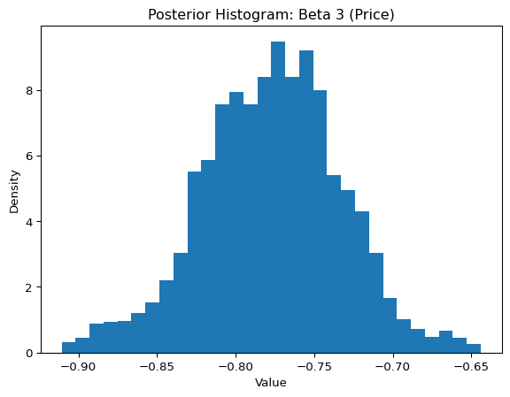

import pandas as pd
import numpy as np
from scipy.optimize import minimize
from scipy.stats import norm
from sklearn.preprocessing import StandardScalerMultinomial Logit Model
This project explores two methods for estimating the MNL model: Maximum Likelihood and a Bayesian MCMC approach.
1. Likelihood for the Multi-nomial Logit (MNL) Model
Suppose we have \(i=1,\ldots,n\) consumers who each select exactly one product \(j\) from a set of \(J\) products. The outcome variable is the identity of the product chosen \(y_i \in \{1, \ldots, J\}\) or equivalently a vector of \(J-1\) zeros and \(1\) one, where the \(1\) indicates the selected product. For example, if the third product was chosen out of 3 products, then either \(y=3\) or \(y=(0,0,1)\) depending on how we want to represent it. Suppose also that we have a vector of data on each product \(x_j\) (eg, brand, price, etc.).
We model the consumer’s decision as the selection of the product that provides the most utility, and we’ll specify the utility function as a linear function of the product characteristics:
\[ U_{ij} = x_j'\beta + \epsilon_{ij} \]
where \(\epsilon_{ij}\) is an i.i.d. extreme value error term.
The choice of the i.i.d. extreme value error term leads to a closed-form expression for the probability that consumer \(i\) chooses product \(j\):
\[ \mathbb{P}_i(j) = \frac{e^{x_j'\beta}}{\sum_{k=1}^Je^{x_k'\beta}} \]
For example, if there are 3 products, the probability that consumer \(i\) chooses product 3 is:
\[ \mathbb{P}_i(3) = \frac{e^{x_3'\beta}}{e^{x_1'\beta} + e^{x_2'\beta} + e^{x_3'\beta}} \]
A clever way to write the individual likelihood function for consumer \(i\) is the product of the \(J\) probabilities, each raised to the power of an indicator variable (\(\delta_{ij}\)) that indicates the chosen product:
\[ L_i(\beta) = \prod_{j=1}^J \mathbb{P}_i(j)^{\delta_{ij}} = \mathbb{P}_i(1)^{\delta_{i1}} \times \ldots \times \mathbb{P}_i(J)^{\delta_{iJ}}\]
Notice that if the consumer selected product \(j=3\), then \(\delta_{i3}=1\) while \(\delta_{i1}=\delta_{i2}=0\) and the likelihood is:
\[ L_i(\beta) = \mathbb{P}_i(1)^0 \times \mathbb{P}_i(2)^0 \times \mathbb{P}_i(3)^1 = \mathbb{P}_i(3) = \frac{e^{x_3'\beta}}{\sum_{k=1}^3e^{x_k'\beta}} \]
The joint likelihood (across all consumers) is the product of the \(n\) individual likelihoods:
\[ L_n(\beta) = \prod_{i=1}^n L_i(\beta) = \prod_{i=1}^n \prod_{j=1}^J \mathbb{P}_i(j)^{\delta_{ij}} \]
And the joint log-likelihood function is:
\[ \ell_n(\beta) = \sum_{i=1}^n \sum_{j=1}^J \delta_{ij} \log(\mathbb{P}_i(j)) \]
2. Simulate Conjoint Data
We will simulate data from a conjoint experiment about video content streaming services. We elect to simulate 100 respondents, each completing 10 choice tasks, where they choose from three alternatives per task. For simplicity, there is not a “no choice” option; each simulated respondent must select one of the 3 alternatives.
Each alternative is a hypothetical streaming offer consistent of three attributes: (1) brand is either Netflix, Amazon Prime, or Hulu; (2) ads can either be part of the experience, or it can be ad-free, and (3) price per month ranges from $4 to $32 in increments of $4.
The part-worths (ie, preference weights or beta parameters) for the attribute levels will be 1.0 for Netflix, 0.5 for Amazon Prime (with 0 for Hulu as the reference brand); -0.8 for included adverstisements (0 for ad-free); and -0.1*price so that utility to consumer \(i\) for hypothethical streaming service \(j\) is
\[ u_{ij} = (1 \times Netflix_j) + (0.5 \times Prime_j) + (-0.8*Ads_j) - 0.1\times Price_j + \varepsilon_{ij} \]
where the variables are binary indicators and \(\varepsilon\) is Type 1 Extreme Value (ie, Gumble) distributed.
The following code provides the simulation of the conjoint data.
3. Preparing the Data for Estimation
The “hard part” of the MNL likelihood function is organizing the data, as we need to keep track of 3 dimensions (consumer \(i\), covariate \(k\), and product \(j\)) instead of the typical 2 dimensions for cross-sectional regression models (consumer \(i\) and covariate \(k\)). The fact that each task for each respondent has the same number of alternatives (3) helps. In addition, we need to convert the categorical variables for brand and ads into binary variables.
conjoint_data = pd.read_csv('/Users/kaistern/Documents/MGTA_Data/MGTA_Marketing_Analytics/quarto_website/blog/project3/conjoint_data.csv')conjoint_data['is_netflix'] = (conjoint_data['brand'] == 'N').astype(int)
conjoint_data['is_prime'] = (conjoint_data['brand'] == 'P').astype(int)
conjoint_data['has_ads'] = (conjoint_data['ad'] == 'Yes').astype(int)
X = conjoint_data[['is_netflix', 'is_prime', 'has_ads', 'price']].values
scaler = StandardScaler()
X = scaler.fit_transform(X)
y = conjoint_data['choice'].values
conjoint_data['task_id'] = conjoint_data['resp'] * 100 + conjoint_data['task']4. Estimation via Maximum Likelihood
task_ids = conjoint_data['task_id'].values
def mnl_log_likelihood(beta, X, y, task_ids):
beta = np.asarray(beta)
Xb = X @ beta
ll = 0.0
for task in np.unique(task_ids):
idx = task_ids == task
Xb_task = Xb[idx]
y_task = y[idx]
P = np.exp(Xb_task - np.max(Xb_task))
P /= P.sum()
ll += np.sum(y_task * np.log(P))
return -ll # Initial guess
beta_init = np.zeros(X.shape[1])
# Run optimizer with Hessian
res = minimize(mnl_log_likelihood, beta_init, args=(X, y, task_ids), method='BFGS', options={'disp': True})
# Extract estimated parameters
beta_hat = res.x
log_likelihood = -res.fun
# Standard errors from inverse Hessian
hessian_inv = res.hess_inv
standard_errors = np.sqrt(np.diag(hessian_inv))
# 95% confidence intervals
z_score = norm.ppf(0.975) # ≈ 1.96
conf_int_lower = beta_hat - z_score * standard_errors
conf_int_upper = beta_hat + z_score * standard_errors
# Display results
for i, name in enumerate(['netflix', 'prime', 'ads', 'price']):
print(f"{name:>7}: β = {beta_hat[i]: .4f}, SE = {standard_errors[i]: .4f}, 95% CI = [{conf_int_lower[i]:.4f}, {conf_int_upper[i]:.4f}]")
print("\nLog-likelihood:", log_likelihood) Current function value: 879.855368
Iterations: 13
Function evaluations: 317
Gradient evaluations: 62
netflix: β = 0.4454, SE = 0.0315, 95% CI = [0.3837, 0.5071]
prime: β = 0.2372, SE = 0.0667, 95% CI = [0.1066, 0.3679]
ads: β = -0.3658, SE = 0.1053, 95% CI = [-0.5722, -0.1595]
price: β = -0.7937, SE = 0.1331, 95% CI = [-1.0546, -0.5328]
Log-likelihood: -879.8553682672009/Users/kaistern/Documents/MGTA_Data/MGTA_Marketing_Analytics/quarto_website/.venv/lib/python3.13/site-packages/scipy/optimize/_minimize.py:733: OptimizeWarning: Desired error not necessarily achieved due to precision loss.
res = _minimize_bfgs(fun, x0, args, jac, callback, **options)This output summarizes the results of fitting a multinomial logit model using maximum likelihood estimation. The model converged after 13 iterations, with a final log-likelihood of -879.86. The estimates show that Netflix has the highest positive effect on utility (β = 0.4454), followed by Prime (β = 0.2372), indicating a general preference for Netflix over Prime. The ads coefficient is negative (β = -0.3658), suggesting that the presence of ads reduces utility, while the price coefficient is strongly negative (β = -0.7937), confirming that higher prices make a service less attractive. All coefficients are statistically significant at the 95% level, as their confidence intervals do not include zero. The warning at the end suggests that there may have been numerical issues during optimization, but the solution still appears interpretable and reasonable.
5. Estimation via Bayesian Methods
def log_prior(beta):
lp = np.sum(-0.5 * (beta[:3] ** 2) / 5 - 0.5 * np.log(2 * np.pi * 5))
lp += -0.5 * beta[3] ** 2 - 0.5 * np.log(2 * np.pi)
return lpdef log_posterior(beta, X, y, task_ids):
log_lik = -1 * mnl_log_likelihood(beta, X, y, task_ids) # flip sign
return log_lik + log_prior(beta)def metropolis_hastings(log_post_fn, X, y, task_ids, n_steps=11000,
proposal_sds=[0.05, 0.05, 0.05, 0.005]):
beta_current = np.zeros(4)
log_post_current = log_post_fn(beta_current, X, y, task_ids)
samples = []
acceptances = 0
for step in range(n_steps):
proposal = beta_current + np.random.normal(0, proposal_sds)
log_post_proposal = log_post_fn(proposal, X, y, task_ids)
log_accept_ratio = log_post_proposal - log_post_current
if np.log(np.random.rand()) < log_accept_ratio:
beta_current = proposal
log_post_current = log_post_proposal
acceptances += 1
samples.append(beta_current.copy())
print(f"Acceptance rate: {acceptances / n_steps:.3f}")
return np.array(samples)samples = metropolis_hastings(log_posterior, X, y, task_ids)
posterior_samples = samples[1000:] # discard first 1,000 Acceptance rate: 0.398for i in range(4):
param_samples = posterior_samples[:, i]
mean = np.mean(param_samples)
std = np.std(param_samples)
ci_lower = np.percentile(param_samples, 2.5)
ci_upper = np.percentile(param_samples, 97.5)
print(f"Beta {i}: mean={mean:.3f}, std={std:.3f}, 95% CI=({ci_lower:.3f}, {ci_upper:.3f})")Beta 0: mean=0.446, std=0.052, 95% CI=(0.348, 0.549)
Beta 1: mean=0.239, std=0.053, 95% CI=(0.138, 0.344)
Beta 2: mean=-0.366, std=0.045, 95% CI=(-0.458, -0.277)
Beta 3: mean=-0.786, std=0.043, 95% CI=(-0.869, -0.700)import matplotlib.pyplot as plt
plt.plot(posterior_samples[:, 3])
plt.title("Trace Plot: Beta 3 (Price)")
plt.xlabel("Iteration")
plt.ylabel("Value")
plt.show()
plt.hist(posterior_samples[:, 3], bins=30, density=True)
plt.title("Posterior Histogram: Beta 3 (Price)")
plt.xlabel("Value")
plt.ylabel("Density")
plt.show()
posterior_samples = samples[1000:] # discard first 1,000
summary = []
for i in range(4):
param_samples = posterior_samples[:, i]
mean = np.mean(param_samples)
std = np.std(param_samples)
ci_lower = np.percentile(param_samples, 2.5)
ci_upper = np.percentile(param_samples, 97.5)
summary.append((mean, std, ci_lower, ci_upper))from scipy.optimize import minimize
result = minimize(mnl_log_likelihood, x0=np.zeros(4), args=(X, y, task_ids))
mle_beta = result.xprint("Parameter | Posterior Mean | Std Dev | 95% CI | MLE Estimate")
print("-----------|------------------|-----------|--------------------------|----------------")
for i in range(4):
post_mean, post_std, lower, upper = summary[i]
print(f"Beta {i:<5} | {post_mean:>16.3f} | {post_std:>9.3f} | ({lower:>6.3f}, {upper:>6.3f}) | {mle_beta[i]:>13.3f}")Parameter | Posterior Mean | Std Dev | 95% CI | MLE Estimate
-----------|------------------|-----------|--------------------------|----------------
Beta 0 | 0.446 | 0.052 | ( 0.348, 0.549) | 0.445
Beta 1 | 0.239 | 0.053 | ( 0.138, 0.344) | 0.237
Beta 2 | -0.366 | 0.045 | (-0.458, -0.277) | -0.366
Beta 3 | -0.786 | 0.043 | (-0.869, -0.700) | -0.7946. Discussion
If the data were not simulated but instead came from actual respondents, the parameter estimates reflect real-world preferences rather than values defined by a simulation. In this case, we observe that the estimated coefficients provide insight into how different attributes, such as brand and price, influence consumer choices. For example, if the estimate for \(\beta_\text{Netflix}\) is greater than that for \(\beta_\text{Prime}\), it indicates that respondents, on average, prefer Netflix over Prime Video, all else being equal. This suggests that the Netflix brand is associated with higher perceived utility or desirability in the choice context. Additionally, a negative coefficient for price, \(\beta_\text{price}\), makes intuitive sense: it means that as the price of a streaming service increases, its attractiveness decreases, which aligns with standard economic theory that higher prices tend to reduce demand. Overall, the signs and magnitudes of the estimates provide a coherent and interpretable picture of how people make trade-offs between different features when choosing among alternatives.
To simulate data from and estimate the parameters of a multi-level model, you need to move beyond the assumption that all individuals share the same preferences. Instead, you allow each individual to have their own set of utility coefficients, which are drawn from a population-level distribution. Typically, this is modeled as a multivariate normal distribution, where each respondent’s coefficients (betas) are drawn from a common distribution with a mean vector, representing average preferences across the population, and a covariance matrix (capturing the variability and correlation of preferences across individuals). To simulate data, you would first sample individual-level betas from this distribution, and then simulate choices based on these betas and the design matrix. To estimate such a model, you would need to use hierarchical Bayesian methods to infer both the individual-level parameters and the group-level hyperparameters. This structure captures heterogeneity in preferences and better reflects how real people vary in their responses, making it the preferred approach for analyzing real-world conjoint data.